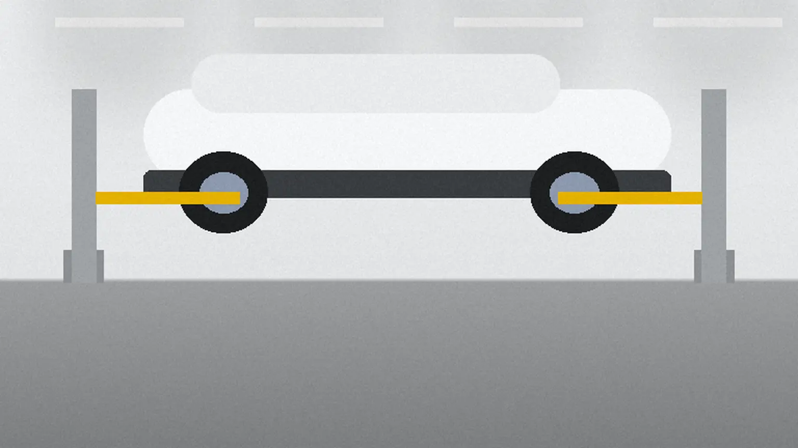

車検と整備を、
部品を見せて説明します。
- 主なサービス
- 車検／点検整備／中古車の相談
- 料金の目安
- 車検の整備基本料 22,000円から軽自動車・税込。法定費用は別
- 連絡の方法
- 電話かフォーム。見積もりは無料返信は翌営業日まで
- 受ける車
- ○国産の乗用車・軽自動車・軽トラック・ハイブリッド車
- ×2.5t以上の車・車高の低い改造車
車検証の写真と走行距離があれば、見積もりが早く出せます。無理な営業はしません。


画像はAI生成のイメージです

01交換の根拠
替える部品は、
先に見せます。
外した部品を新品と並べ、どれだけ減っているかを見てから決めていただきます。
| 外す | 外した部品は、捨てずにトレーに並べます |
|---|---|
| 比べる | 新品と並べて、厚みや傷をその場で見せます |
| 決める | 替えるかどうかは、お客様がその場で決めます |
| 電話のとき | 来られない日は、部品の写真を送ります |
| 残す | 替えなかった部品も、次に替える目安を整備記録に書きます |
02作業の範囲
受けられる作業と、
受けられない作業
- リフト
- 2柱リフト 2基
- 間口
- 2間口・同時に2台まで
- 機械
- タイヤチェンジャー・診断機
| 作業 | 受付 | 補足 |
|---|---|---|
| 車検（24か月点検と検査） | ○受けます | 最短1日。代車あり（予約制） |
| 12か月点検 | ○受けます | 5,500円から（税込） |
| オイル・タイヤの交換 | ○受けます | タイヤはタイヤチェンジャーで |
| バッテリー・ワイパーの交換 | ○受けます | 外した部品をお見せします |
| 異音や警告灯の点検 | ○受けます | 診断機で原因を確かめてから見積もり |
| ハイブリッド車の車検と点検 | ○受けます | 高電圧部品の修理は除く |
| 中古車の相談・下見の同行 | ○受けます | 無料。整備の記録から気になる所を伝えます |
| 電気自動車の高電圧部品の修理 | ×受けません | メーカーの販売店へご相談ください |
| 板金・塗装 | ×受けません | 近くの板金工場を紹介します |
03車検の費用
車検の合計を、
車の大きさで比べる
整備基本料と法定費用（重量税・自賠責・印紙）を足した目安です。
| 項目 | 軽自動車 | 小型〜1.0t | 中型〜1.5t | 大型〜2.0t |
|---|---|---|---|---|
| 合計の目安税込・円 | 48,500 | 63,900 | 75,400 | 86,900 |
| かかる日数 | 1日 | 1日 | 1〜2日 | 1〜2日 |
法定費用は年式で変わります。部品の交換は、見せて了承を得てからの別料金です。
内訳と、追加費用が出る条件を見る
04工場と問い合わせ
工場の場所と、
見積もりの問い合わせ
- 所在地
- 架空県わだち市 轍町（国道から一本入った道沿い）番地は【要確認】
- 営業時間
- 平日 8:30–18:00
土曜 9:00–17:00 - 休み
- 日曜・祝日
- 駐車場
- 工場の前に6台
- 電話
- 【要確認】受付時間は営業時間と同じ
見積もりを伝えて了承をいただく前に、作業はしません。